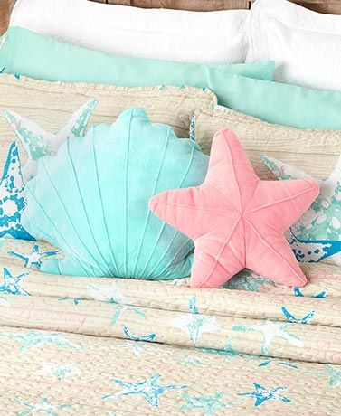

RIDDLE
May ulo, walang mata, may katawan, walang paa.
Sa gabing madilim, ikaw ay aking kasama.
ANSWER

PILLOW/UNAN
May ulo, walang mata, may katawan, walang paa.
Sa gabing madilim, ikaw ay aking kasama.
Author:
Passed down through oral tradition
Year of Publication:
Collected in various anthologies